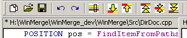
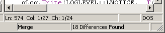
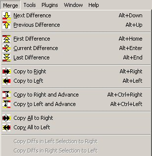
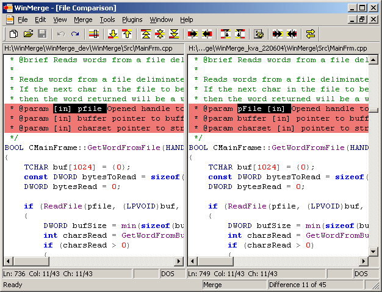
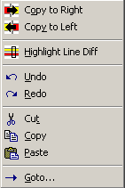

9. Comparing files
File compare window is basically two files opened to editor into two horizontal panes. Editing files is the big difference between 1.7.1 and newer versions. Editing allows user to easily do small changes without need to open files to other editor or development environment.
 |
If Automatic rescan is not enabled manual refresh is recommended after editing. |

9.1. Showing the differences
WinMerge uses different (user configurable) colors to highlight and select differences. By default WinMerge shows different lines with yellow background and missing lines with gray background. If user selects the difference, it is shown with red background and missing lines with milder red.
9.2. File headerbar
File headerbar has many functionalities. See screenshot below:

Firstly, headerbar shows filename and full path for file. Headerbar also shows:
-
current active file with sunken border (like in screenshot), non-active file is shown with flat headerbar.
-
if file has unsaved changes. This is indicated by adding asterisk (*) before filename, like in screenshot.
Headerbar also has context menu with items to copy full path or filename to clipboard.
9.3. Statusbar

Statusbar upper line shows information about current line. In first pane:
-
Ln : current linenumber
-
Col: current column for cursor and total number of columns in line
-
Ch : current char for cursor and total number of chars in line
-
EOL : current line EOL style (shown only when Preserve original EOL chars-option is enabled)
 |
Col counts TAB as X chars (as defined in editor options) and Ch counts TAB as one. |
Next two panes show RO if file is protected and file's EOL style ("DOS/UNIX/MAC"). Note these two different ways to show EOL style. When per-line EOL style is not remembered, EOL style is shown on own pane in statusbar. And when per-line EOL style is remembered line's EOL style is shown after char number. When per-line EOL style is used there is no file-wide EOL style.
Difference between column and char is that column counts tabulator chararcter as so many (space) chars as it occupies (4 by default, can be changed from options). But char count counts tabulator char as one char.
Lower line in statusbar shows current difference and amount of differences. Text can be:
-
Identical : files are identical there are no differences
-
X differences : amount of differences, no difference is selected
-
Difference X of Y : amount of differences (Y) and number of selected difference (X)
9.4. Difference navigation
Difference navigation commands are in menu:

9.4.1. Selecting a difference
Before difference can be merged, it must be selected. Selecting can happen by difference navigation keys/items (see below) or by selecting wanted difference directly:
-
Double-click over difference with mouse
-
Move cursor inside difference and select it with .
9.4.2. Navigating differences
-menu has items for navigating to next/previous and first/last difference. Navigation is always done based on current cursor location. So -command selects next difference from cursor, not from current selected difference.
|
When difference is selected with navigation commands cursor is moved to begin of first line of difference. In both files. |
9.4.3. -command
This command has two important functions:
-
When there is no difference selected and cursor is inside difference, it selects this difference. This is very handy way to select difference from keyboard.
-
When there is selected difference, it scrolls to selected difference. This is handy if user has scrolled selected difference out of screen. So this allows user to scroll files to see other contents and quickly return back to selected difference.
9.4.4. Go To line or difference
Using from -menu user can jump to certain line or difference. Go To -dialog prefills current line and side to Go To -dialog.
|
Go To line number is useful if there is need to merge same change to several target files from one original file. Rather than using or difference navigation it is faster to jump to first line of difference. |
9.4.5. Merge mode
Merge mode can be enabled from the -menu. It restores the WinMerge 1.7.1 single keys for difference merging and navigating:
-
Up- and Down arrow keys select previous and next difference
-
Left- and Right arrow keys merge difference to left side or right side.
Unlike the normal mode, in this schema the Alt-key is not needed for these basic operations (which makes them quicker and more convenient). Note that Shift-Arrow, Alt-Arrow and Ctrl-Alt-Arrow keys work in merge mode like in normal mode.
When merge mode is enabled Merge text is shown in statusbar.
9.5. Merging differences
Merging commands are located in -menu after navigation commands. Basically there are only two types of merging commands - copy difference from right to left and copy difference from left to right. Additional commands make merging several differences easier.
and copy difference from side to side. At simplest this means replacing text in destination difference with text in source difference. But because difference can contain also removed lines, new lines may be created or some lines removed.
WinMerge rescans files after every merging operation. This is done to ensure differences were copied correctly and all changes after last rescanning are taken care of. If Automatic rescan-option is not set, user may have edited files and differences may not have shown correctly before merging. If result of merging is not what were wanted, user can undo merging operation.
 |
It is strongly adviced to run (F5) before merging differences if Automatic rescan is set off. |
-commands merge current difference and then select next difference (if there is one). Using these commands makes merging several differences easier and faster.
-commands sync two open files merging all differences.
-commands allow user to select several differences and merge them in one command. User can even select whole file and then merge all differences with one command. These commands are handy when there are several small differences that should be merged. Its easier and faster to select those differences first and then merge with these commands than merging those differences one by one.
9.6. Refreshing
Refreshing updates differences after changes are made to files. Its important to do refresh before merging changes between files.
|
Refresh does not reload file. That means, if another programs has updated files etc, those changes are not seen. Refresh updates differences according changes user has done. |
9.7. View whitespaces
When enabled from menu feature shows all whitespace characters (spaces, tabulators, line ends). This is very useful for example when there are spaces in other file and tabulators in other. Also, if Preserve original EOL chars is enabled, WinMerge shows type of EOL (DOS/UNIX/MAC).
9.8. Editing files
Normal editing features work in WinMerge editor. User can type and delete text, select text, copy, cut and paste text etc. There is some customisation because there can be removed lines in files (lines existing only in other side). Anyway these customisations are not usually visible to users otherwise that lines can sometimes "jump" when WinMerge has to relocate matching/non-matching files.
9.9. Difference inside line
Many times it is useful to see exact differences inside lines. WinMerge can highlight different area between lines. This feature is called Highlight File Diff. It is available in -menu, toolbar and shortcut key (F4). In screenshot below there is one difference highlighted. First time whole difference area in one line is highlighted. Repeating cycles through individual changed words.

9.10. Context menu
File compare context menu contains items for frequently used features:

All these items work like selected from main menu.
9.11. Fonts
Font used by editor can be changed from ->. Due to limitations in the editor, only fixed width fonts are supported in WinMerge.
Font suggestions for use of WinMerge with East Asian languages:
-
Simplified Chinese texts with the SimSun or SimHei fixed-width fonts
-
Traditional Chinese texts with the MingLiU fixed-width font, or
-
Japanese texts with the MS Gothic or MS Mincho fixed-width fonts
-
Korean texts with the GulimChe fixed-width font (not Gulim as this variant uses proportional-spacing glyphs that are not centered in grid cells and then poorly aligned in fixed-width mode)